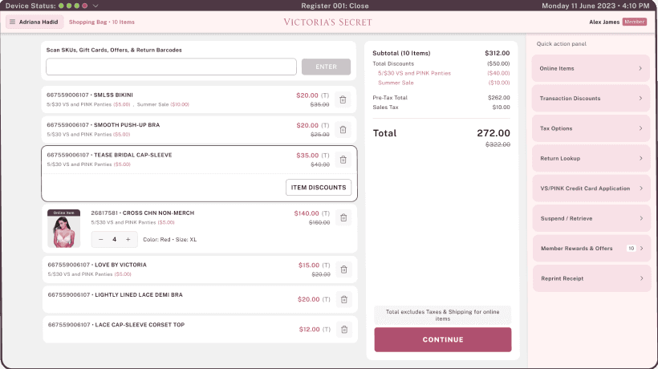
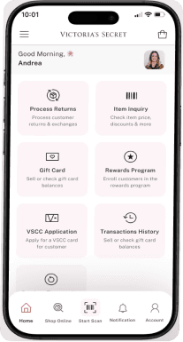
POS X Reimagining Store POS
POS for Seamless In-Store Experience, Desiging a faster and more flexible way to shop in store
Project overview
The legacy POS put sales at risk across more than 1000 stores. Slow checkout and fixed counters limited how many customers a store could serve at peak times. Hard-to-learn workflows made every new hire costly to train.
The business needed one modern POS, on web and mobile, that raises store revenue and cuts the time to complete a sale, without disrupting trading.
The problem started with how the system was built, one module per task:
- 1Module-driven silosEight modules, each its own screen, named by a number code.
- 2Data and workflow frictionAssociates retyped the transaction ID, SKUs and totals between modules.
- 3Decision-making breakdownNo stock in search and no price preview, so associates decided without the facts and fixed errors afterwards.
- 4Business and revenue impactSlow checkout, fewer customers served at peak, and costly training for every new hire.
TL;DR
for the curious minds who are interested in conclusion
Add to cart
Pricing
Before redesign
Add to cart
Pricing
After redesign
Built to scale
One POS for checkout counters and mobile device
1000+
Rolled out across 1,000+ stores worldwide
Sales without a queue
Associates order online for out-of-stock items
$3M+
from assisted online orders in store
Associates chose it
Seen as highly valuable for serving customers
85%
adoption across stores
Goal
Design a flexible POS that runs on handheld mobile device and across platforms (mobile & web).
Cut task completion time by 30%
Cut average checkout wait at peak sales by 50-65%
Able to assist customer anywhere in the store via mPOS
Reduce training time by 25%
Increase revenue by 10%
Scope
In scope
- Sale flow: product lookup, bag, discounts, tax and payment
- Mobile POS for assisted selling anywhere in the store
- A shared component library for web and mobile
Out of scope
- Customer lookup: loyalty, email capture and credit card lookup
- Loyalty programme strategy
- Rarely used manager workflows (moved to a later release)
Known constraints
| Constraint | What it meant for the design |
|---|---|
| Existing business rules | Finance and operations had to approve any change to pricing, discount or tax rules. |
| Scale and training budget | More than 1000 stores worldwide would use the system, but time and budget to retrain staff were limited. |
RESEARCH
Discovery workshop with store associates & project managers
Understanding the broader product ecosystem
Before looking at individual screens, it was important to understand how the POS fitted into the broader retail ecosystem.
A store associate does not think in terms of isolated system modules. They think about helping a customer find a product, checking its availability, completing a transaction, taking payment, or resolving a problem with an existing purchase.
These activities connect multiple capabilities:
- Product discovery Search for products and identify the right size, colour, and availability.
- Transaction management Add items, change quantities, and review the basket.
- Pricing and promotions Understand discounts, taxes, and the final amount.
- Payment Select the appropriate payment method and move through the payment workflow.
- Post-purchase service Locate transactions and support relevant returns or exchanges.
- Assisted online ordering Help customers purchase products that are unavailable in-store.
This ecosystem view shifted the focus from individual interface elements to the relationships between tasks, transaction states, and supporting business capabilities.
User groups that we identified
Checkout Specialists
- Primarily at cash wrap/checkout counters
- Billing, applying offers, rewards signup, handling returns and exchanges
- Long queues, slow systems, confusing offer application
Floor Advisor
- On the sales floor assisting customers
- Product lookup, size & availability check, fitting room support, upselling
- Guide customers quickly, improve conversion
Hybrid Associates
- Switch between floor & counter depending on rush hours
- Support checkout during peak, assist on floor during off-peak
- Balance both customer support & checkout
New & Part-Time Associate
Require Training
- Work seasonal or part-time shifts, often at the counter during peak hours
- Learning to scan items, apply discounts, take payment and process returns
- Too many steps to remember, so they lean on the manual and ask colleagues for help
Research - User Interviews / Field Study
20
stores visited in North America
50+
associates took part, North America
| Participant group | What to investigate | Why | How |
|---|---|---|---|
| Experienced cashiers | Shortcuts, established mental models, frequent tasks | They set the speed benchmark, so the new design must not slow down what they already do fast. | Scan items, apply a discount, complete payment |
| Newer associates | Learnability and discoverability | Training took longer because of the system's complexity, so they show where new users get lost. | Find a product, correct an incorrect quantity |
| Store managers | Permissions, overrides, reconciliation | Approvals and exceptions interrupt a sale, so we need to know how much they slow the queue. | Approve a discount, resolve an exception |
Limitation: associates could be interviewed only outside peak trading hours, but we observed them at work during both peak and non-peak hours.
Understanding associates behaviour and pain-points at each step
Assisted online order
Find the product
Two routes, and six screens deep by category
●●●Choose size and colour
Two dropdown lists, with price in small text
●● ●Review the basket
Dense lines, but the screen is simple
● ●●Fix the price
Jargon reason codes, and errors take over the screen
●●●Customer and payment
Nine screens, confirmed on two devices
●● ●Returns and adjustments
Dead-end errors when the sale is not found
●●●The journey at a glance. Colour shows how much friction we saw at each stage. It is our reading of the screens and associate feedback, not a measured score.
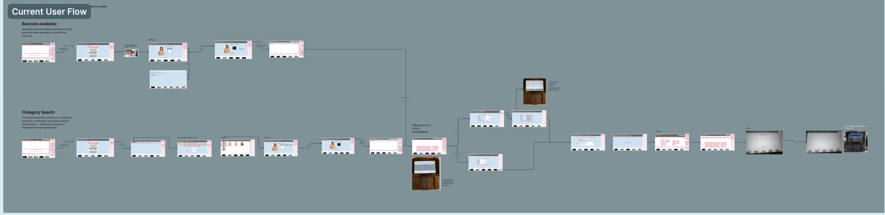
View User flowAffinity mapping
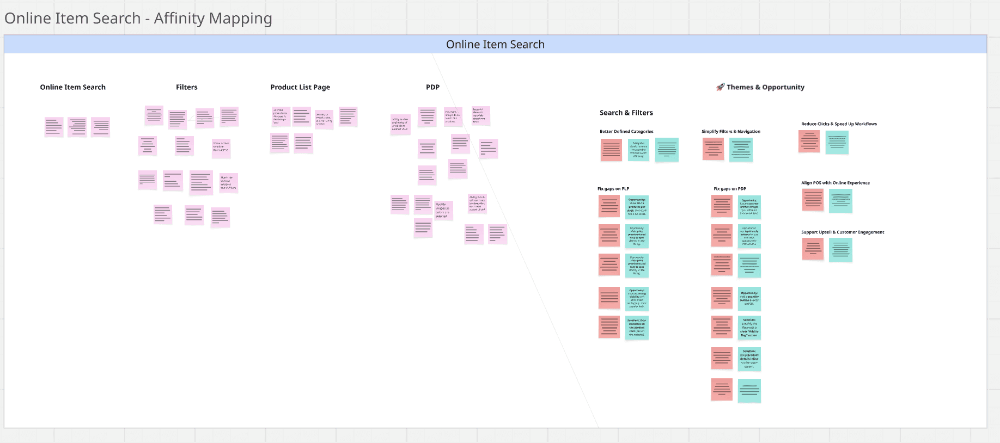
View Miro boardResearch Findings
- Fragmented UX: Legacy system's module-driven navigation, unclear information hierarchy, and inconsistent action placement made product discovery and checkout workflows slow to complete. 70-80% found navigation unclear.
- Complex checkout workflows: Discounts, employee discounts, price adjustments, payments, and return-related refunds involved difficult-to-follow workflows, adding friction to checkout. 80% said simple tasks feel complicated.
- Operational constraints affecting sales: Fixed checkout counters limited flexibility to serve customers during peak periods, potentially affecting sales. 70% reported delays helping customers.
- Slow onboarding: Difficult workflows increased the learning curve for new hires, adding training overhead and reducing floor efficiency. 65% said training takes longer.
DEFINING THE PROBLEM
Slow & Complicated Navigation
Takes multiple clicks/steps even for simple tasks like finding a product by keyword or filters, slowing down associates
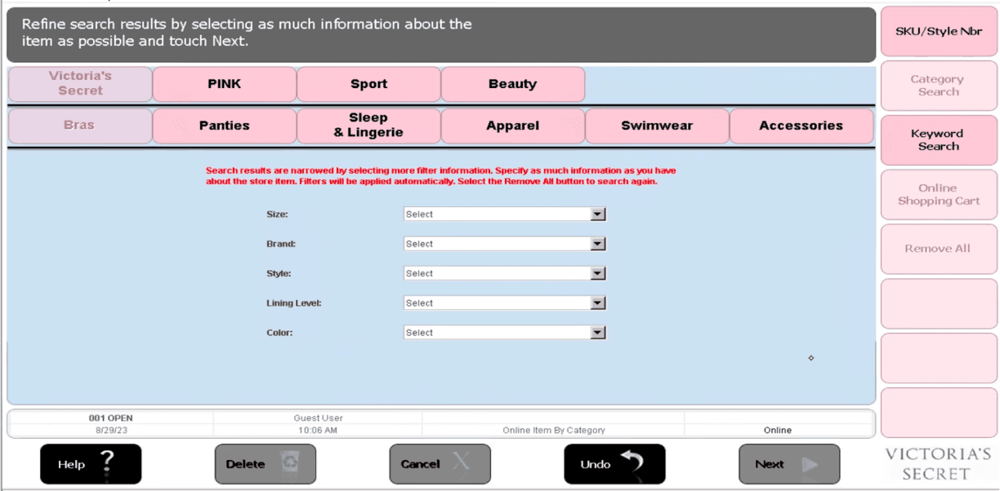
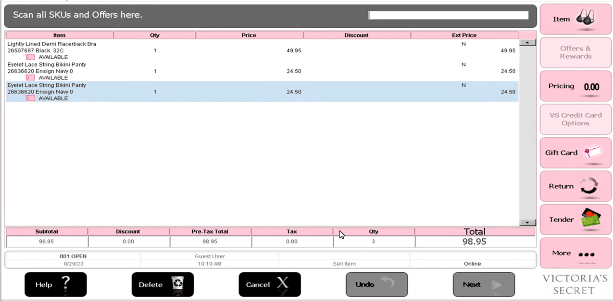
Payments
Processes like loyalty lookup, email capture and credit card lookup take too long
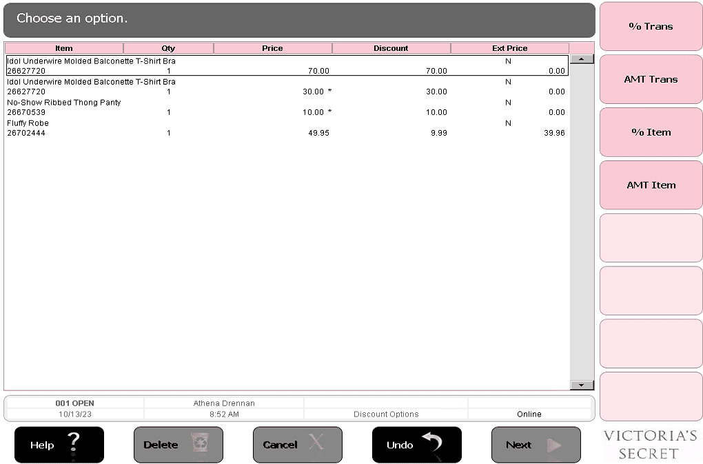
Workflows were system oriented not task
- Information and actions were difficult to scan
- Making transaction information easier to understand
- Helping associates serve customers more flexibly
"How might we help every associate, new or experienced, complete a sale quickly from the register or the shop floor, so queues shrink and sales grow?"
IDEATION
Customer journey map
The journey follows the associate's workflow, not just the shopper's movement through the store.
Discover a product
Select a product
Build the basket
Review the transaction
Take payment
Handle returns or exchanges
Taps Item on the Sell Item screen, then scans the tag or browses by category
Chooses size and colour on the product page
Adds the item and checks the line on the Sell Item screen
Fixes prices and applies discounts by hand when the system misses a promotion
Confirms the customer and the amount, then takes tender and sends the receipt
Looks up the original sale to adjust a price or return an item
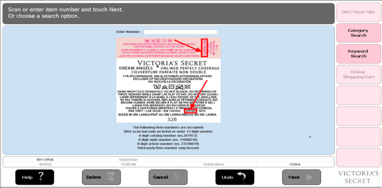
Scan or enter item number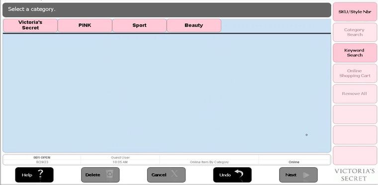
Select a category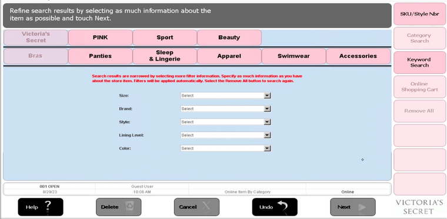
Refine search filters- Is it out of stock here, and can I find it online?
- Do I have a barcode, or do I have to browse?
- Which category and filters will narrow it?
- Which size is available?
- Which colour does the customer want?
- Are the price and availability right?
- Did the right size and colour get added?
- Is the price what I told the customer?
- Is this an online or an in-store item?
- Did the system apply the promotion?
- Which type fits: transaction, item, employee or price override?
- Which reason code do I pick?
- Do we already have the customer's details?
- Did the customer confirm the amount?
- Which tender will they use?
- Where is the original sale?
- Does the item qualify for an adjustment?
- What do I do if the sale is not found?
- Scans the tag or types the item number
- Or opens Category Search and picks Victoria's Secret, PINK, Sport or Beauty
- Sets sub-category, size, brand, style, lining and colour
- Opens the size list and picks one
- Opens the colour list and picks one
- Reads the online SKU, price and availability
- Opens Full Description for more detail
- Touches Add on the product page
- Checks the item, quantity, price and total
- Adds more items, or moves on to the customer's details
- Opens Price Override, Discount, Free Item or Employee Discount from the side buttons
- Enters a percent or an amount on the keypad
- Picks a reason such as Coupon Not Scanning or Semi-Annual Sale
- Scans an employee number, or retries after an invalid one
- Searches by the customer's email and confirms or enters the ship-to details
- Directs the customer to confirm contact details and the total on the pin pad
- Selects a tender: credit or debit, gift card or cash
- Prints or emails the receipt
- Opens Price Adjustment from the side buttons
- Scans or enters the receipt information
- Reads the error and answers Yes or No
- Otherwise returns the item at the original price and sells it again at the current price
😐
Impatient
🤔
Unsure
😕
Overloaded
😟
Doubtful
😬
Pressured
😤
Frustrated
- Searching and filtering can involve too many interactions
- Four ways to start a search sit on one screen
- Five filter dropdowns share one page under long red instructions
- Size, colour, name, and price are difficult to scan
- Size and colour are two separate dropdown lists
- Price and availability sit in small text under the lists
- Repeated text and weak hierarchy make items difficult to distinguish
- Each line packs item, colour, size and SKU into tiny text
- Online and in-store items share one list
- Discounts and final totals are difficult to distinguish
- Reason codes use internal terms such as GWP, Redline and Gratis
- Errors take over the whole screen, and there is no preview of the new price
- The next action needs to remain clear in the context of the current transaction
- Associate and customer screens both ask for confirmation, so it is unclear who acts next
- A red reminder says mobile payments do not work for online items
- Associates need to locate the relevant transaction and understand the available actions
- Messages such as Price Adjustment Invalid and Transaction Not Found do not say what to do next
- The fallback is a manual return and a second sale
- One search for SKU, name or barcode
- Filter chips instead of five dropdowns
- Recent and frequent items up front
- Touch-sized size and colour chips
- Live availability for every size
- Price and SKU always in the same place
- Group variants under one item
- Clear levels for name, variant and price
- Mark online items clearly, with their ship-to status
- An always-visible transaction summary
- Itemised discounts with their source
- A guided discount picker with plain-language reasons and a price preview
- One primary next action on every screen
- Show which payment types work before tender
- Basket summary and payment status always in view
- Find the sale by receipt scan, phone or email
- Show only the actions allowed for each item
- Explain the reason and the next step in one line
IDEATION
Patterning
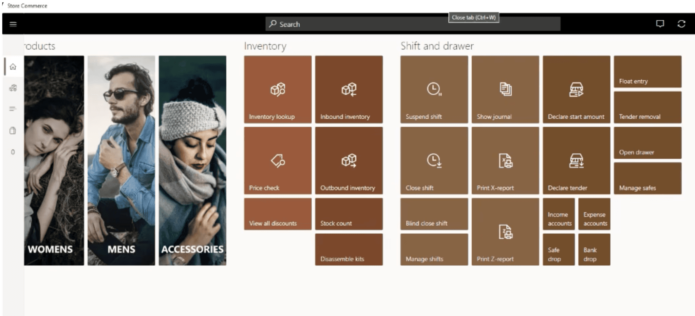
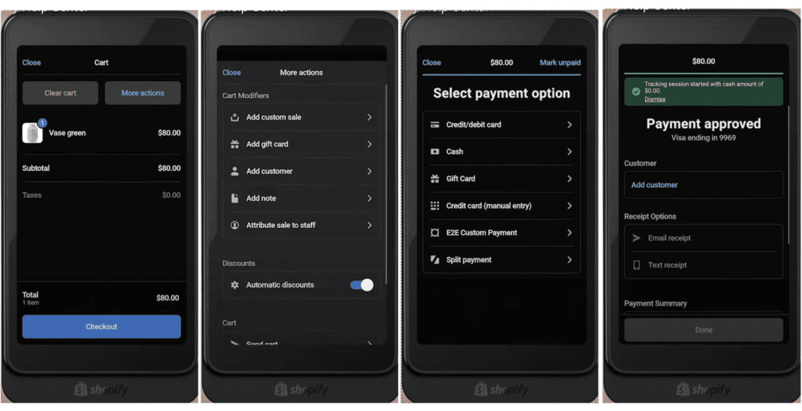
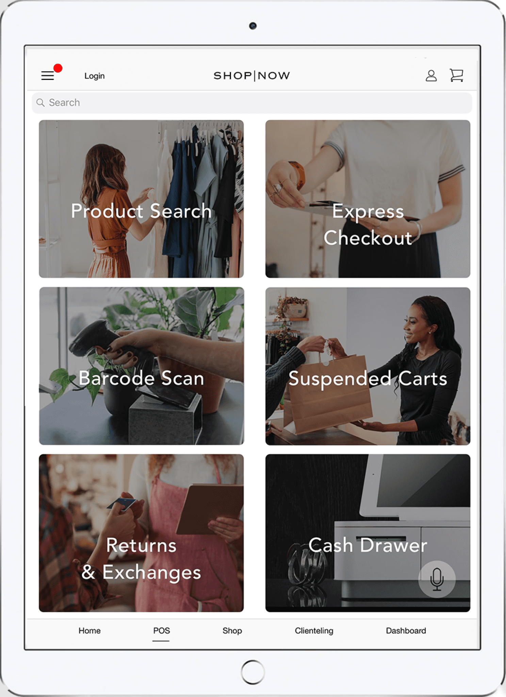
Learnings from these POS patterns
- Start from the associate's tasks. Home screens open on jobs such as search, checkout and returns, or group tiles by task.
- Make the main targets large and few. Big tiles and list rows are easy to hit with a finger.
- Keep payment as a short guided sequence. One decision per screen, a Checkout button always in view, and a final confirmation with receipt options.
- Hide the occasional actions. Rare actions such as gift cards or custom sales sit under More, and automatic discounts cut manual entry.
- Keep search and navigation always in reach. A search bar and tabs or a side rail stay visible.
IDEATION
Information Architecture
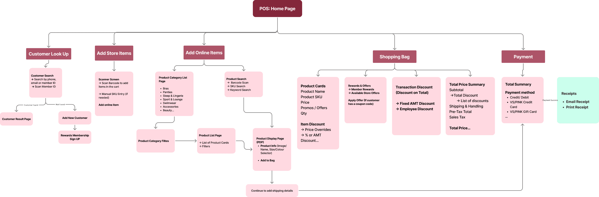
CONCEPTS
Add to cart
Every sale starts by finding a product and adding it to the bag. We explored three ways to make that faster, each with a different starting point for the associate. Click a screen to enlarge it.
Find any product faster
HMW help associates reach the right size and color in the fewest taps?
Before
❌ Many clicks to search by keyword or filter
❌ Tiny dropdowns for size and color
After
✅ Large, touch-friendly size and color selection
✅ Clear hierarchy, short instructions
Serve customers anywhere in the store
HMW let associates start and finish a sale away from the counter?
Before
❌ Checkout only at fixed counters
❌ Queues build at peak hours
After
✅ Handheld mPOS for floor advisors
✅ Same flows on mobile and web
Order online when stock is out of store
HMW let an associate place an online order for the customer in a few steps?
Before
❌ Too many steps to order on a customer's behalf
❌ Rewards sign-up took over 5 minutes
After
✅ Out-of-stock items found and ordered in one flow
✅ Generated $3M+ in assisted online orders
CONCEPTS
Pricing workflow
Discounts and price changes needed the most explaining and the most care. We explored three ways to apply a discount, from one modal with tabs to a step-by-step wizard. Click a screen to enlarge it.
One modal, four tabs (chosen)
HMW let associates find every discount type from one place?
Before
❌ Four discount categories sit in a long form
❌ Internal codes and no hint about which discounts can combine
After
✅ One Transaction Discounts button opens a modal with four tabs
✅ The modal shows the reason, the limit and any conflict before the associate applies
Edit discounts inline in the cart
HMW let associates change a price on the item line, without leaving the cart?
Before
❌ Associates leave the cart to change one price
❌ Many separate screens for one sale
After
✅ A discount editor opens inside the item row
✅ The associate sees the new price on the same line
Step-by-step wizard
HMW guide a new associate to the right discount, one step at a time?
Before
❌ Associates must know which category to pick
❌ Nothing explains what each option does
After
✅ Step 1 asks what the associate needs to do
✅ Each choice has a plain-language description
END TO END
One sale, before and after
A customer wants a bra in her size. It is out of stock in store, so the associate orders it online, applies a promotion, takes payment, and later adjusts the price. Select a stage to compare the steps the associate takes in each journey.
Before
- 1Tap Item on the Sell Item screen
- 2Scan the tag or open Category Search
- 3Pick a brand, then set five filter dropdowns
- 4Search again online when the item is not in store
❌ Four ways to start a search and five dropdowns share one screen.
After
- 1Scan the tag or type in one search box
- 2Narrow the results with filter chips
- 3See stock in store and online on the result
✅ One search box. Stock in store and online shows on the result.
Before
- 5Open the size list and pick a size
- 6Open the colour list and pick a colour
- 7Find price and availability in small text under the lists
- 8Open Full Description to confirm the item
❌ Size, colour, name and price are hard to scan.
After
- 4Tap a size chip
- 5Tap a colour chip
- 6Read price and live availability in the same place
✅ Touch-sized chips and live availability for every size.
Before
- 9Tap Add on the product page
- 10Read item, colour, size and SKU packed in small text
- 11Tell online items from in-store items in one list
❌ Repeated text and weak hierarchy make lines hard to tell apart.
After
- 7Tap Add once
- 8Read name, variant and price on clear levels
- 9See a clear ship-to tag on online items
✅ Variants group under one item, with clear levels of text.
Before
- 12Open Discount or Price Override from the side buttons
- 13Enter a percent or an amount on the keypad
- 14Pick a reason that uses internal terms such as GWP or Redline
- 15Learn the new price only after it is applied
- 16Read an error that fills the screen
❌ Discounts and the final total are hard to tell apart, and errors take over the screen.
After
- 10Tap Transaction Discounts to open one modal
- 11Pick the Discount tab and enter the amount
- 12Pick a plain-language reason
- 13See the limit and any conflict before applying
✅ One modal with four tabs. The associate sees the result before applying.
Before
- 17Search the customer by email
- 18Ask the customer to confirm details on the pin pad, and wait to see who acts next
- 19Select a tender
- 20Read a red reminder that mobile payment does not work for online items
- 21Print or email the receipt
❌ The next action is unclear while both screens ask for confirmation.
After
- 14Confirm the customer on one screen
- 15Tap the one primary action, Continue
- 16Select a tender
- 17Send the receipt
✅ One clear next action for the associate at each step.
Before
- 22Open Price Adjustment from the side buttons
- 23Scan or enter the receipt
- 24Read Transaction Not Found with no next step
- 25Return the item and sell it again at the current price
❌ Messages do not say what to do next, so the fallback is a manual return and a second sale.
After
- 18Find the sale by receipt scan, phone or email
- 19See the options for that sale
- 20Apply the price adjustment in one flow
✅ The associate finds the sale and sees every available action.
Final Designs - Web
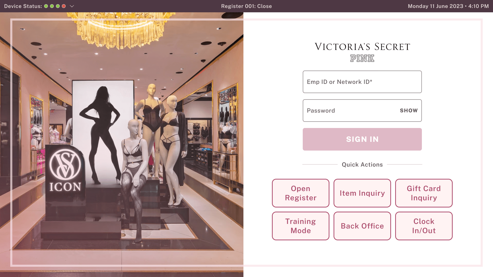
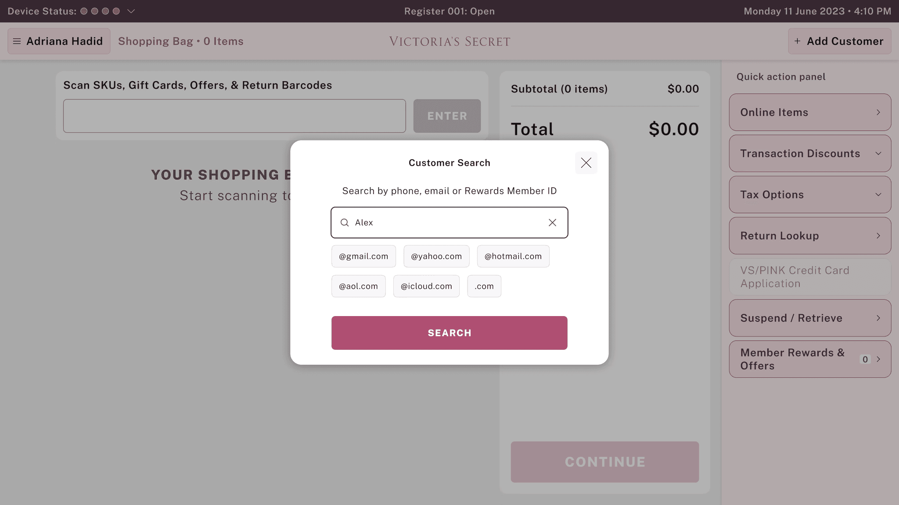
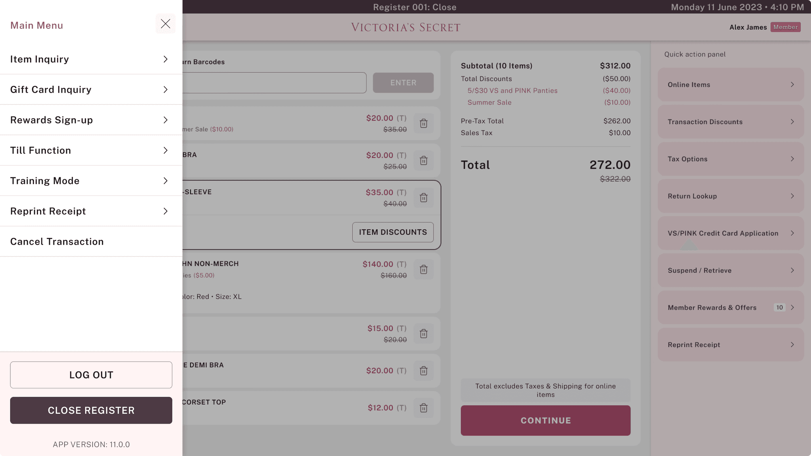
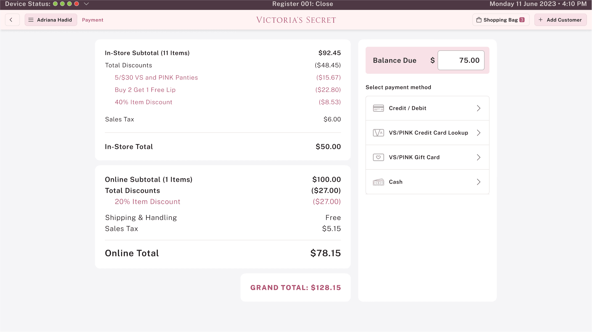
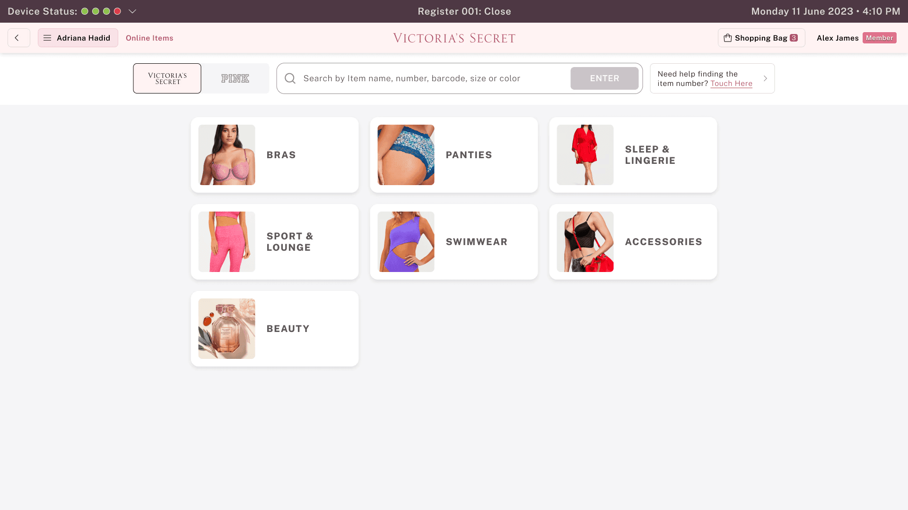
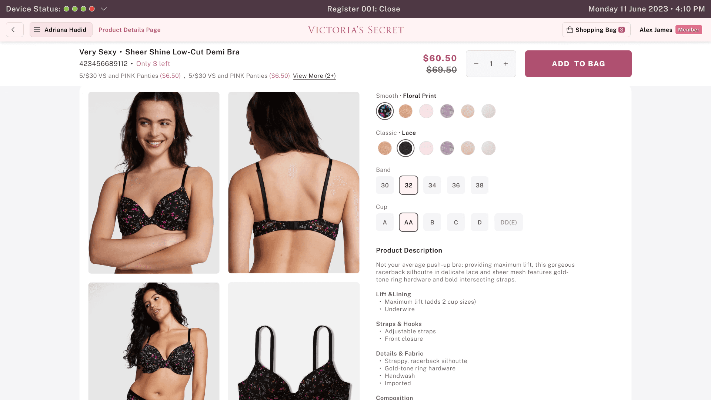
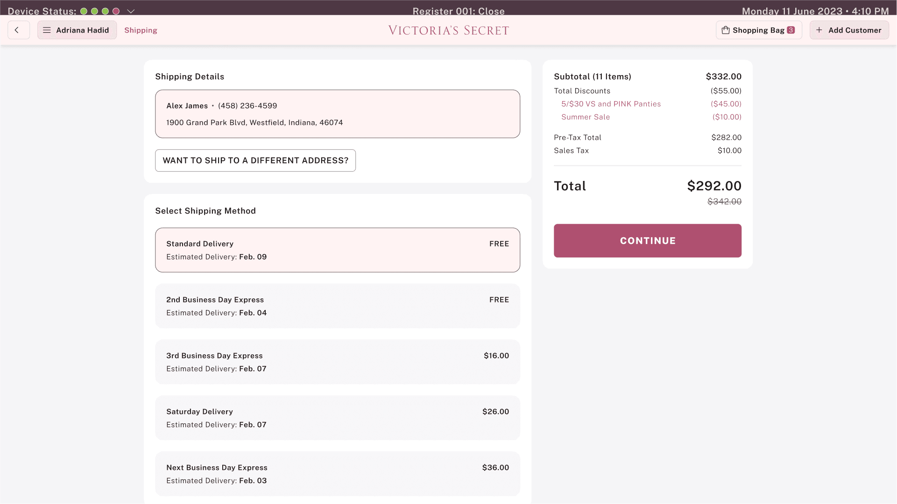
Final Design & Solution for Mobile
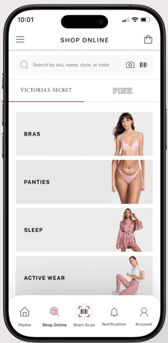
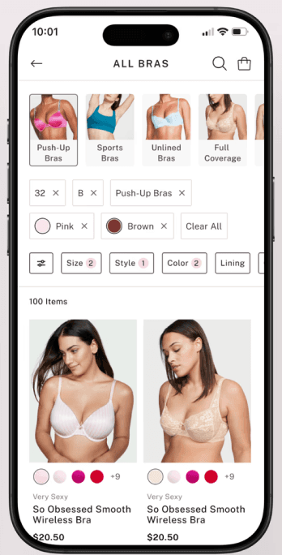
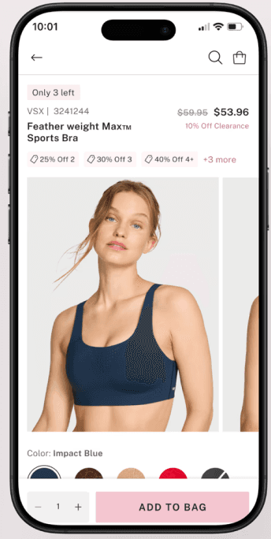
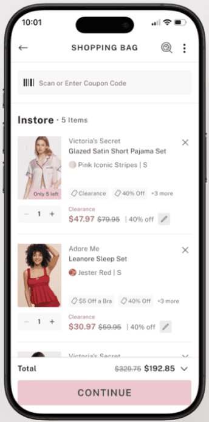
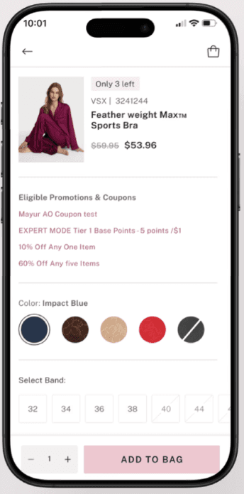
SOLUTION
Business Impact & Outcomes
The POS solution scaled quickly, improving both customer experience and store efficiency.
1000+ stores worldwide
Rolled out in 334 stores
$3M+ revenue
Generated through in-store assisted online orders
85% adoption
Associates find the tool highly valuable for serving customers